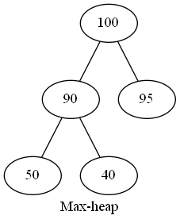
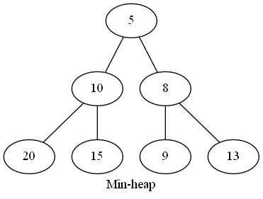
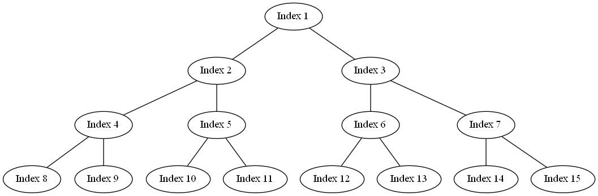

應用
在time sharing的作業系統中， 不希望優先權高(執行時間最短的)的process等候過久，
策略使用SJF(shortest-job-first)，
利用max-heap每次取出最大優先的process處理。
min-heap c語言寫法只差在compared condition 不同而已。
search time complexity:
\( O(n) \)
Max-Heap
為一完備二元樹(commpele binary tree)， 任一節點的資料內容不
小
於子節點的資料內容。

graph
Min-Heap
為一完備二元樹(commpele binary tree)， 任一節點的資料內容不
大
於子節點的資料內容。

graph
陣列表示binary tree
Index 0不使用

graph
Insert node into heap
Max-heap
code(c)
Delete max value from max-heap